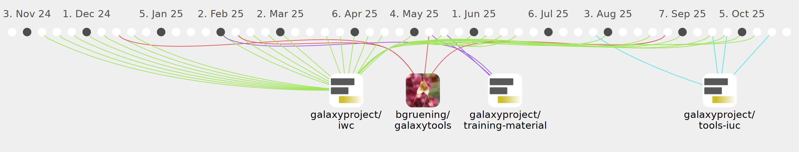

Delphine-L

Commits all-time: 900
Commits last year: 357

(317)
- 04217d4
- 89060db
- 4372633
- d97dedc
- baa2d6d
- 47f9233
- 47f47d7
- b6dbd98
- c7b78b5
- 62aaceb
- 9587f82
- 83e0122
- 0654f1e
- 0d34882
- f15cc9c
- be79c4f
- be12c39
- 85f8b0c
- 7028eb7
- 40859ae
- 7fd0564
- 004b7e7
- 39c38e2
- c3880a5
- d01b00f
- c5339b8
- 7a7af2f
- 6229e4b
- 7cf48b4
- 81e48e9
- 084f69e
- 2dce54f
- 4c879b0
- 0d5a005
- 5c60f6f
- bf19f9d
- 1531a52
- d54dddd
- 1140080
- fff0f60
- 1ca63ff
- 27f9500
- b4b907b
- 9d52986
- 0e9c872
- 365242b
- 2c6a37e
- dae11e8
- c86520d
- 2d6620b
- 7d241b4
- 9ecfd15
- 65de146
- b7c176f
- 3e45a91
- 7c5c96b
- 0450ffe
- 276d29c
- 4669acd
- 0204dae
- 1a97391
- b656090
- 2bb0503
- 8c28f24
- c00797b
- d9ca5c7
- 3517482
- c15cce7
- c616905
- 30b433f
- 212e658
- 3123955
- 0e0bf98
- 00d60de
- e78a982
- 48a154b
- ec25a24
- 2957827
- 1afa0c3
- bd17bd0
- 93e5f95
- ac57ce3
- b50f717
- b4a7199
- 442f188
- 813f3c4
- 01a2e4b
- 9d4bc40
- 0e013b0
- eab8685
- cd812d3
- 006cb12
- 540f2ff
- c0998f5
- 00e8eb0
- 93531c0
- a982e9f
- cc86c5c
- b405bb3
- bb04f90
- 5eca690
- a66a21d
- c5b7acb
- b7493f7
- 2890d8e
- 213cf61
- fb671d9
- 0d74cbc
- ba67bcf
- 729b88a
- de0e503
- 8f1d2b9
- 180d195
- e0a3e09
- c95431d
- c656554
- 17013f7
- 4d55b92
- d4c80ed
- 169bd6a
- 717c2c5
- 2a8d26e
- 06885f9
- 9067552
- aba7b9b
- 253b769
- d22ecb1
- 45959d8
- 288b91b
- 8bae9f1
- 5cd984a
- 7bc11f2
- a069fd1
- 3cd307b
- fdeff16
- 4c3a767
- 10e2643
- 580998c
- 54811cd
- 26a096a
- aeb521e
- c2bf650
- b85c5dd
- 0d96b97
- 644e2a1
- afab890
- 6adab4c
- c85c9e7
- d5f1bdf
- efe2787
- 4c14795
- 84b97e0
- c44125d
- 04867ff
- 17ccddc
- 27b526c
- 5cbe9c1
- 2a8a059
- d7423ab
- 73f1272
- 1a6e705
- 16d5576
- 4e7ad6a
- f909ec9
- 3bbd9ab
- 8588b88
- db9fc5c
- 0248af7
- d39cccd
- c1fb52a
- bbcfed8
- bfacefa
- 91a267d
- 35b596c
- 6350178
- 6a236c6
- f652ea4
- ae2fe4c
- f11cb07
- 3678440
- 0ca3512
- e1c3e27
- db48a8c
- 2d42cd5
- 787ed1e
- eae1d2a
- bfbf762
- 24afc38
- 3b89b3e
- 8d2029e
- 426bd28
- f73dbd3
- e534b24
- 30add13
- f71394d
- bfbba6b
- 28f5c5b
- e01cb8e
- ba107da
- d48241f
- de9b9a5
- 89b7f1d
- 5e2d785
- 487a84b
- f63e0ac
- 8b3a068
- 9df7d8b
- 2c7e140
- 3d0c7f3
- 113e9c8
- 8d72f52
- 08f4c8c
- 5e36c46
- ffbfccd
- 1eb4d60
- ad30c9a
- 8a6b851
- ade464c
- 182cb5b
- c3ee9ba
- d7d1b54
- 908a40a
- 7266fe3
- 5bc7e9e
- a50470b
- d709d30
- 395a7bd
- 3e56d75
- c760e19
- b7b6cd2
- f62d1cf
- e7fd5ee
- 5c49710
- 31b3a36
- 81b7f06
- fde0b6c
- 1bb80cf
- 0046ea7
- efd390b
- d45573b
- 1d3e75b
- 97eae2b
- 814dbd8
- 3f848b6
- 3964514
- a01161f
- 4f85b55
- 4a68b1f
- 7442cad
- f849b68
- 2eca8f7
- 82f151b
- 4561bfe
- c4c38be
- 93fe616
- ed78dbd
- c113739
- b190e30
- 2ad2165
- e33bcfb
- 7131a18
- af43d6f
- d76acf7
- db19d39
- 75b3d6a
- 97a798f
- c70c6c5
- 59fc983
- f4a2202
- f9c1d6b
- 651c2ec
- a0b4031
- dd8633c
- 536cd04
- 912fe01
- 0d5025f
- 7591c97
- a858d85
- 5c91c9e
- 7949654
- ef58328
- 36f7f25
- e7fd905
- 6c2fc7f
- 79dea1a
- 064543e
- d371373
- e998192
- ed5e139
- cf2fc07
- 0c8f959
- 974ca13
- 94a04a1
- 0b979f8
- ccb155b
- 72d35e4
- d956058
- 8da7290
- b001922
- 376911e
- cfdbda8
- d5e0bab
- a0a3171
- 0ad0dad
- fd5c20d
- a8f47bd
- f0e1150
- 141014e
- 76e9701
- b8a0e3c
- ed2d664
- a5505f8
- a88b00c
- 5b2f7b5
- c5fc2a4
- df6fe7e
- db16877
(21)
(11)
(5)
(3)